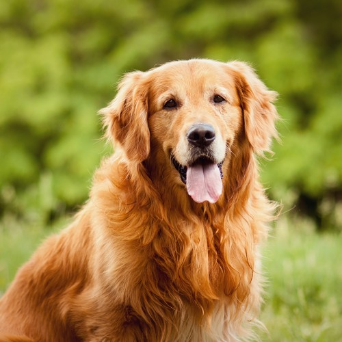

Golden Retriver
De origem britânica, conhecido por ser muito dócil e companheiro, o Golden Retriever é considerado por muitos o “cão dos sonhos”. Bastante inteligente, pronto para aprender truques e muitas vezes usados como cães-guia, o Golden é um cachorro ativo e que gosta de ajudar e agradar a todos (inclusive aqueles que não conhece tão bem). Adora truques e precisa de muita atenção e de tempo disponível para gastar sua energia. Ele também é um ótimo nadador e o favorito de várias famílias, algo que fez com que a sua popularidade ficasse bastante alta nas últimas décadas aqui no Brasil e no mundo.
